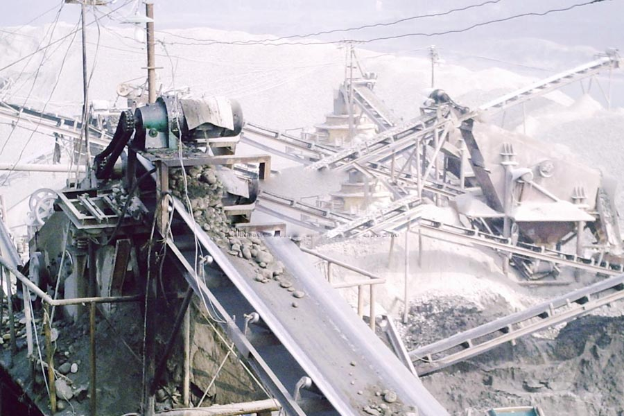

Construction waste crushing production line

Mobile construction waste crushing station for urban construction waste crushing.
fully mobile Limestone Crusher
fully mobile Limestone Crusher, Limestone production line, limestone crusher, CAG limestone production line, full mining Equipment Co., Ltd. is committed to mining industry more than 10 years, specializing in large-scale build Nissan-ton limestone production line, for the material properties of limestone, using a molding of hammer crusher equipment, Low investment in equipment, crushing ratio.
Limestone crushing production line, limestone gravel production line, a set of limestone production line, limestone crushing production line has become the cement, stones factory most common raw material crushing project, CAG in limestone crushing rich production line construction business experience to the Ying Yang Shui Nissan 8000 tons of limestone production line Case

Limestone crushing production line
CAG Machinery (Limestone crushing production line) in mineral processing aspects widely used, many customers get more benefits, CAG product also mainly for minerals, rock crusher, mineral grinding, sand stone and mineral processing and other fields. We provide Limestone crushing production line technical guidance, based on your specific needs, for your rational design of production lines.
Because the tariff is low, you can (Limestone crushing production line) to save a lot of costs, it can also be purchased to get more benefits, our products and designs for you is really value for money.
Limestone crushing plant, limestone crushing process, limestone crushing production line factory, limestone is an important building materials and industrial raw materials, limestone crushing production line process, the principal will be used the following equipment: limestone crusher, limestone mill, pulverized lime Lime and other production equipment.
Limestone crushing line equipment configuration:
vibrating feeder + PE series jaw crusher + PF series impact crusher + belt conveyor + circular vibrating sieve;
vibrating feeder + DPC single stage hammer crusher + belt conveyor + circular vibrating screen.
ZSW series vibrating feeder + DPX single-stage crushing machine + belt conveyor + circular vibrating screen.
Limestone production process, with an annual 5 million tons of limestone crushing production line much money, fully mobile Limestone Crusher, CAG production of a limestone crusher sand production line complete set of equipment, crushers are jaw broken + + cone crusher + impact crusher mobile crushing plant, sand making machine has 5X system VSI sand making machine and sand.
Limestone crusher | Limestone crushing production line, raw materials: limestone, Yield: 500t / h, limestone crusher equipment configuration: ZSW vibrating feeder, JC jaw crusher, YK circular vibrating screen.
Leave Me A Message, Now
If you have any questions regarding equipment prices, production line configuration or other problems, you can send a message to us, we will contact you soon.